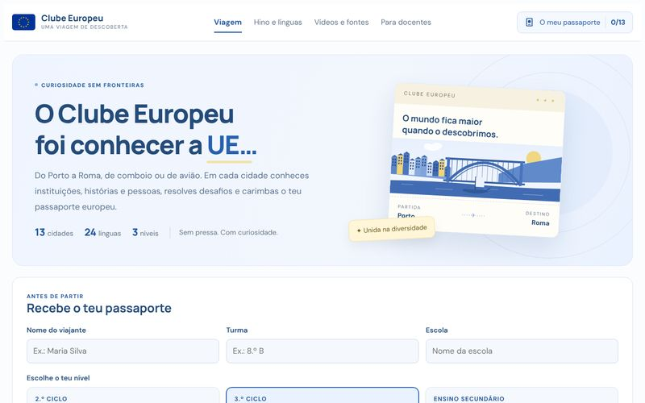
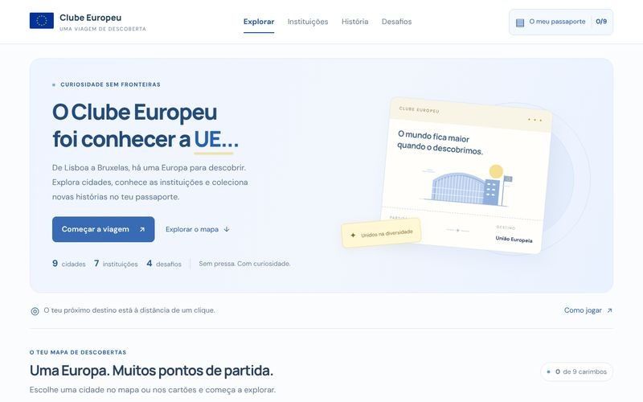
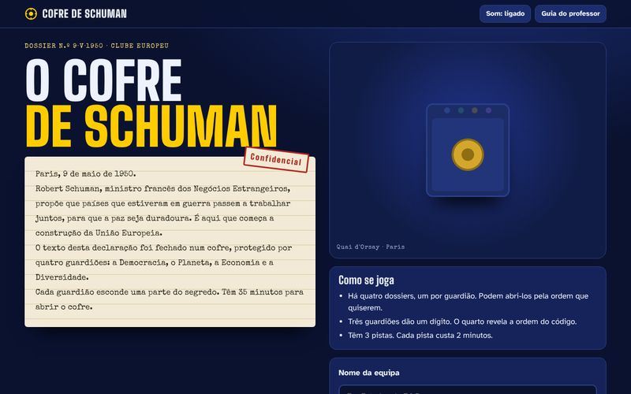
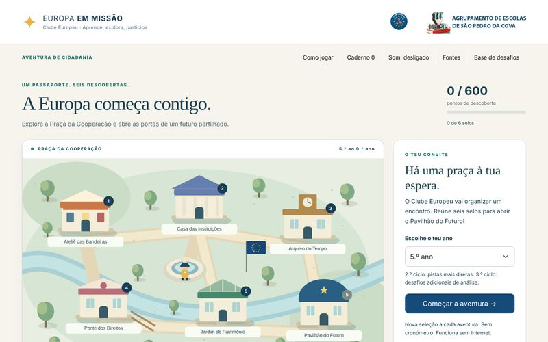
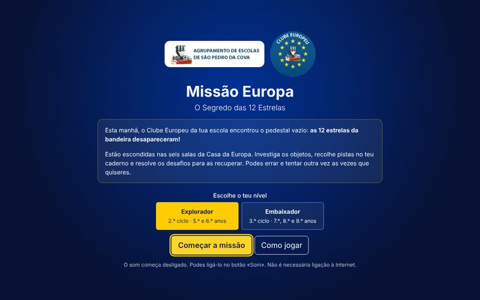
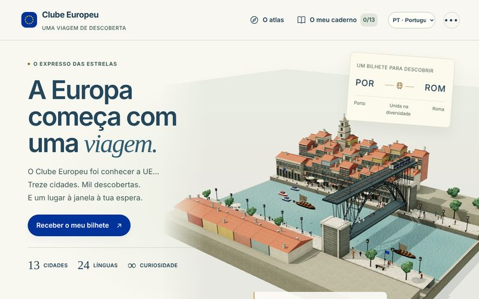
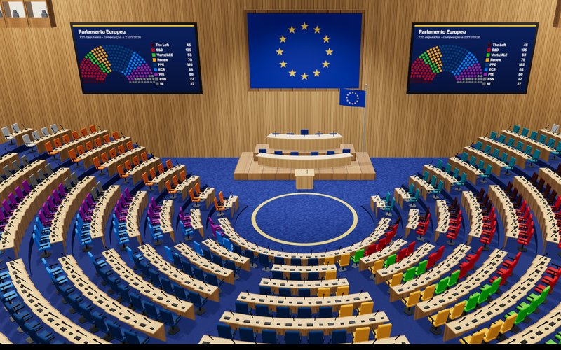
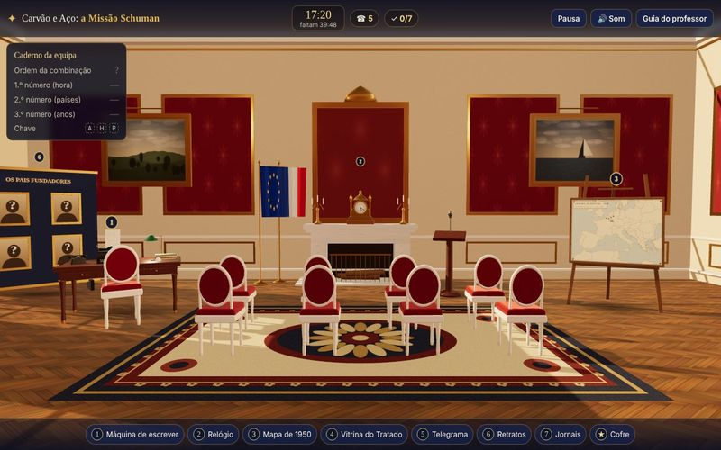

ViagemO Clube Europeu foi conhecer a UE
Do Porto a Roma, de comboio ou de avião. Em cada cidade conheces instituições, histórias e pessoas, resolves desafios e carimbas o teu passaporte europeu.
Abrir jogoClube Europeu
Viagens, missões e desafios sobre a Europa, a democracia, os direitos e as liberdades que nos unem.
9 jogos · funcionam no navegador, sem instalar nada

ViagemDo Porto a Roma, de comboio ou de avião. Em cada cidade conheces instituições, histórias e pessoas, resolves desafios e carimbas o teu passaporte europeu.
Abrir jogo
ExploraçãoUma viagem interativa pelas cidades, instituições e história da União Europeia, com mapa e desafios.
Abrir jogo
Escape roomParis, 9 de maio de 1950. Em equipa, abram os dossiers dos quatro guardiões, descubram o código e abram o cofre antes de o tempo acabar.
Abrir jogo Tabuleiro 3D
Tabuleiro 3D
Jogo de tabuleiro em 3D com perguntas sobre a Europa. Ganha quem juntar primeiro as 12 estrelas.
Abrir jogo
MissãoUm passaporte, seis descobertas. Explora a Praça da Cooperação e abre as portas de um futuro partilhado.
Abrir jogo
InvestigaçãoAventura em 3D: percorre as salas da Casa da Europa, investiga os objetos e recupera as 12 estrelas da bandeira, duas em cada sala.
Abrir jogo
Viagem 3DViagem em 3D por 13 cidades europeias. Observa os monumentos, responde ao quiz, cumpre o desafio e recebe o carimbo para seguir viagem.
Abrir jogo
Visita 3DEntra em 3D no hemiciclo de Estrasburgo. Descobre onde se sentam os grupos políticos, quantos deputados tem cada grupo e quantos elege cada Estado-Membro.
Abrir jogo
Escape room 3DEscape room 3D na Sala do Relógio do Quai d'Orsay: 7 enigmas sobre a Declaração Schuman e o cofre para abrir antes das 18h00.
Abrir jogo«A União funda-se nos valores do respeito pela dignidade humana, da liberdade, da democracia, da igualdade, do Estado de direito e do respeito pelos direitos do Homem, incluindo os direitos das pessoas pertencentes a minorias.» Tratado da União Europeia, artigo 2.º